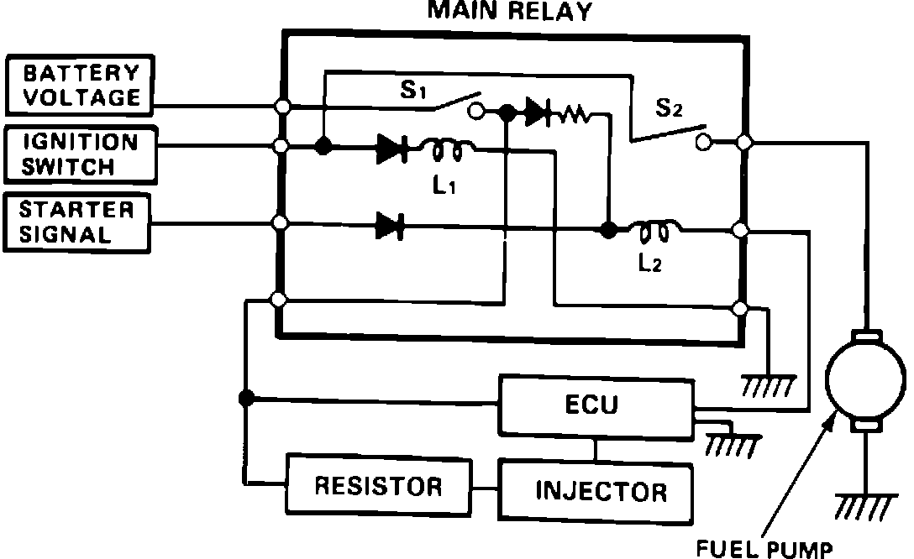

Main Relay (Computer/Fuel System): Description and Operation
Main Relay Operation:

PURPOSE
The main relay, consists of two relays. (1) supplies battery voltage to the fuel ECM, fuel injectors and power to the second relay. (2) this relay supplies power to the fuel pump.
LOCATION
The main relay is mounted behind dash on left side of car.
OPERATION
The first relay is energized whenever the ignition switch is turned on. The second relay is energized for two seconds when the ignition is turned on and when the engine is cranking, to supply power to the fuel pump.